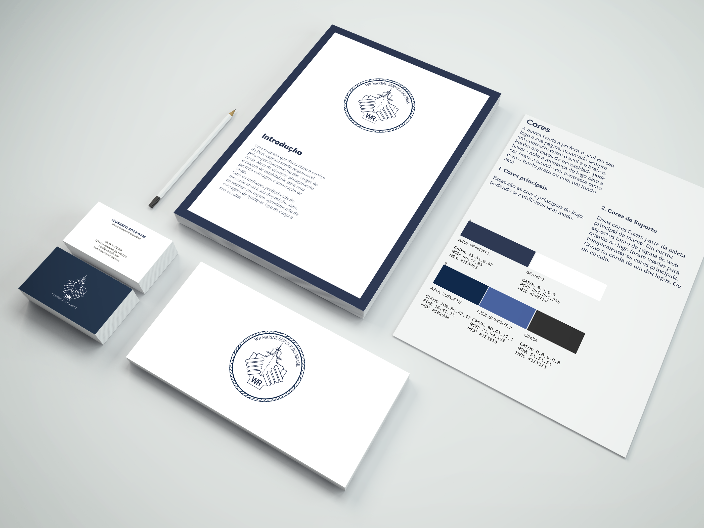
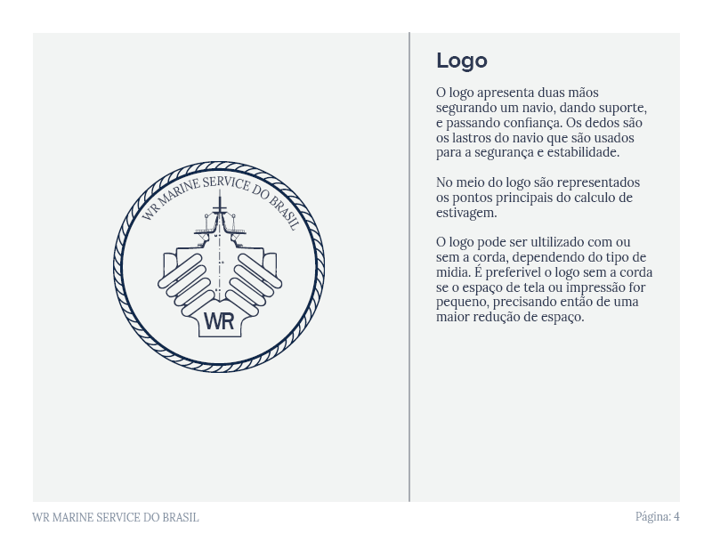
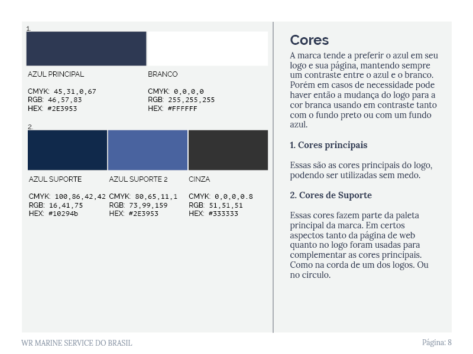
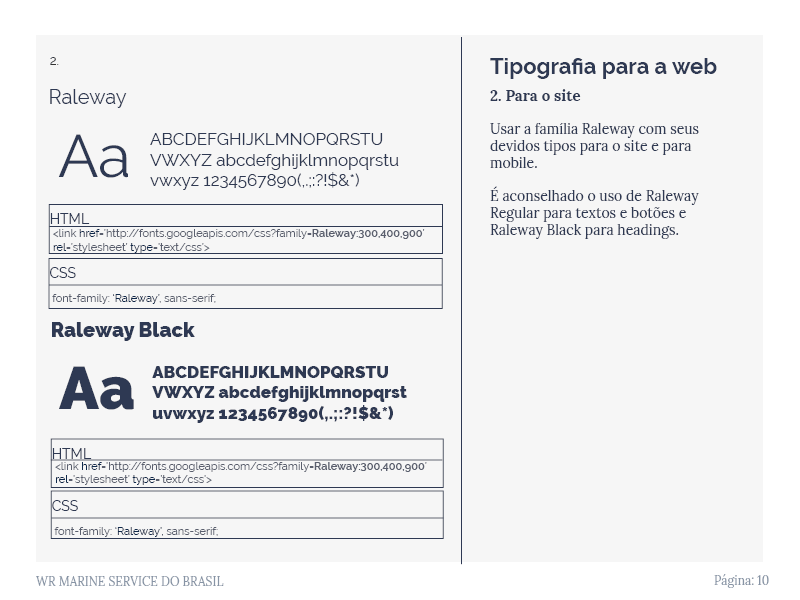

Wr Marine Service do Brasil
Empresa carioca de estivagem de cargas - 2016
O projeto
Projeto da faculdade em conjunto com a empresa carioca WR Marine Service, que atua no ramo de estivagem de cargas. Foi realizado o briefing e o cliente pediu a criação de marca visual e de um site que se diferenciasse dos concorrentes. Para o logo foi então realizada a vetorização do desenho e a correção de erros em cores e traços.

Trechos do manual de Identidade Visual
Devido ao tamanho, é possível visualizar o manual de identidade no Behance
Logo

